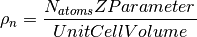
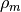
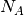
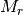
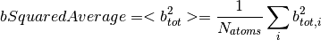
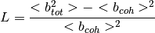

Contents
Neutron scattering lengths and cross sections of the elements and their isotopes have been taken from NIST.
H2 O - Isotopically averaged Hydrogen(H2)2 O - Heavy waterD2 O - Another way to specify heavy waterEnter a composition as a molecular formula of elements or isotopes.
For example, basic elements might be H, Fe or Si, etc.
A molecular formula of elements might be H4-N2-C3, which
corresponds to a molecule with 4 Hydrogen atoms, 2 Nitrogen atoms and
3 Carbon atoms. Each element in a molecular formula is followed by
the number of the atoms for that element, specified without a hyphen,
because each element is separated from other elements using a hyphen.
The number of atoms can be integer or float, but must start with a
digit, e.g. 0.6 is fine but .6 is not. This can be used to set elemental ratios
within a chemical composition. For example 95.1% Vanadium 4.9% Niobium can be
expressed as V0.951 Nb0.049. Warning: Using this representation will
calculate all properties except for SampleNumberDensity which must be
set manually if required
Isotopes may also be included in a material composition, and can be specified alone (as
in (Li7)), or in a molecular formula (as in (Li7)2-C-H4-N-Cl6).
Note, however, that No Spaces or Hyphens are allowed in an isotope
symbol specification. Also Note that for isotopes specified in a
molecular expression, the isotope must be enclosed by parenthesis,
except for two special cases, D and T, which stand for H2
and H3, respectively.
Each of the cross sections ( ) are calculated according to
) are calculated according to

where  . A concrete example for the total
cross section of
. A concrete example for the total
cross section of D2 O

The number density is defined as

It can can be generated in one of three ways:
SampleNumberDensity.ZParameter and the UnitCellVolume (or letting
the algorithm calculate it from the OrientedLattice on the
InputWorkspace).
where  is the mass density,  is the Avogadro constant, and  the relative molecular mass.
The low- limit of is
limit of is  where
where  is called the normalized Laue term
is called the normalized Laue term



The data used in this algorithm comes from the following paper.
Category: Concepts